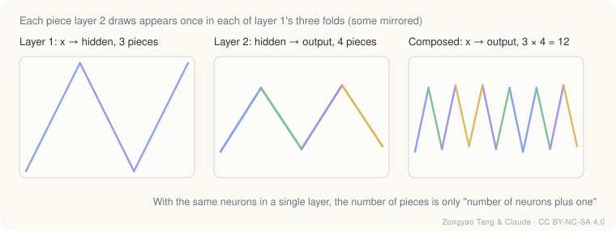
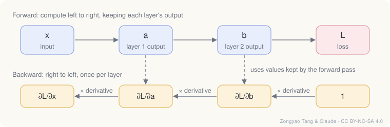

The thread: first see what kind of function the simplest neural network computes → then why making it deeper works better than making it wider → with a network in hand, how to work out which way each parameter should move, which is backpropagation → finally a rule inside backpropagation that is easy to overlook but used everywhere later. This unit is the starting point of the course: every GPU optimisation later optimises the forward and backward passes described here.
Part 1 · Principles of deep learning1.1 Neural networks and backpropagation
Translated by AI (Anthropic's Claude) from the Chinese edition. The Chinese original is the reference.
This unit answersWhat does a neural network actually compute? How are the gradients computed back, layer by layer?
The starting point of the whole course: every GPU optimisation later optimises the forward and backward computation described here.
- A ReLU network cuts the input space into many regions, with a linear function in each
- The power of depth: each extra layer folds the space once more
- Backpropagation = the chain rule + bookkeeping
- A value used several times gets its gradient added several times
Explanation
1A ReLU network cuts the input space into many regions, with a linear function in each
In a ReLU network with one hidden layer, each neuron draws a "bent line" in the input space, and together they make a piecewise linear function: the more hidden units, the more pieces, and the more complex the curves it can assemble. Without an activation function, any number of stacked layers is still just one linear map.
Start from one neuron. A neuron does two things: a linear operation on its input (multiply by weights, add a bias), then an activation function. ReLU is the simplest activation function: it passes positive inputs through unchanged and outputs zero for negative ones. So the output of one ReLU neuron, drawn out, is a "bent line": flat (zero) on one side, a slope on the other, with the bend where the weights and bias put it.
Add a few neurons together. The output of a network with one hidden layer is several such bent lines, each times a coefficient, added up. Each bent line contributes one bend. Between bends, each bent line is either flat or a slope, and their sum is still a straight line. So the whole is a piecewise linear function: D hidden neurons, at most D bends, D+1 pieces.
With a one-dimensional input, this is a curve made of straight segments. With a high-dimensional input, each neuron's "bend" becomes a hyperplane that cuts the input space in two; many hyperplanes cut the space into many regions, and within each region the function is linear.
Why it can approximate any function. Any continuous curve can be followed closely by enough short straight segments, and the more segments, the closer. More neurons give more segments to use. That is the intuition behind the "universal approximation theorem". It says "such a set of weights exists"; whether training can find it is another matter (1.2).
Why the activation function cannot be left out. Remove it and every layer is only a linear operation. A linear operation applied to a linear operation is still a linear operation: two matrices multiplied give one matrix. A hundred such layers can express exactly what one layer can, only a straight line (a hyperplane). It is the "bend" of ReLU that lets each extra neuron add one more piece.
How it connects to what follows. From the systems side, this card explains what a network layer is computationally: a matrix multiplication (the linear part) plus an element-wise operation (the activation function). When 4.1 breaks a Transformer into operators, it still finds these two kinds: matrix multiplications account for the arithmetic, element-wise operations for the memory reads and writes.
An analogyLike assembling a curve from many short rulers: the more rulers, the closer the likeness.
So non-linear activations are where a neural network's expressive power comes from; "neural networks can fit any function" means: with enough pieces, any continuous function can be approximated.
- More neurons give more pieces. But the same number of neurons works better arranged in many layers than in one.
2The power of depth: each extra layer folds the space once more
In a deep network, an earlier layer "folds" the input space, and a line drawn by the next layer in the folded space is copied to every place folded on top of each other. So the number of linear regions can grow multiplicatively with the number of layers, while widening a layer only adds to it.
What happens when two layers are chained. Suppose the first layer turns the input x into a piecewise linear intermediate value, such as a "sawtooth": as x goes from left to right, the intermediate value goes up, down, and up again. Three different intervals of the input are then mapped onto the same range of the intermediate value. You could say the first layer folds the input axis into three and stacks the folds.
The second layer then draws a piecewise linear function of this intermediate value, with, say, 4 pieces. Because the three input intervals share the same range of the intermediate value, the 4 pieces drawn by the second layer appear once in each of the three intervals (some mirrored). The resulting function has 3 × 4 = 12 pieces. And the two layers together use few neurons.

The first layer folds the input axis into three stacked pieces; the 4 pieces the second layer draws appear once in every fold: 3 × 4 = 12 pieces The comparison. Put the same neurons all in one layer and the number of pieces is just "the number of neurons plus one": they add. Split them into two layers and the pieces multiply. The more layers, the more multiplications: the number of linear regions can grow exponentially with depth, but only linearly with width. Figures 4.1 and 4.3 in chapter 4 of UDL (Simon Prince's Understanding Deep Learning, which the author makes freely available online) draw exactly this folding.
But the pieces are not arbitrary. The 12 pieces are not 12 segments that can be adjusted independently: the pattern drawn by the later layer repeats in every "fold". So deep networks are good at representing functions with repeated, hierarchical structure. Real data (images made of parts, parts made of edges; sentences made of phrases, phrases of words) happens to have such hierarchy, which is one explanation of why deep networks work in practice.
The price of depth. With many layers, training gets harder: signals and gradients have to pass through many layers and easily vanish or explode (initialisation in 1.2, residual connections in 1.4). Computationally, depth means the layers must be computed one after another; they cannot run in parallel. So a GPU's parallelism is used inside each layer (the many neurons of a layer, the many samples of a batch, computed together), not across layers. The "bubbles" that pipeline parallelism meets in 7.3, when it cuts a model by layers, come from exactly this dependency of each layer on the one before.
An analogyLike folding a sheet of paper several times and making one cut: unfolded, it has many symmetric cuts. The more folds, the more pattern one cut makes.
So with the same number of parameters, a deep and narrow network often expresses more than a shallow and wide one; this is what the "deep" in "deep learning" means.
- The network can represent complex functions. The next question: how do we know which way to move each parameter so that the loss goes down?
3Backpropagation = the chain rule + bookkeeping
The forward pass records the intermediate result of every step; the backward pass starts from the loss, and each node multiplies the "gradient coming from upstream" by its own local derivative and passes the result to its inputs. Each intermediate result is computed once and reused, so the gradients of all parameters cost only one to two times more computation than the forward pass.
What has to be computed. The loss L is a function of all the parameters. For each parameter w we want ∂L/∂w: if w increases a tiny bit, how much does L change? With it, we move w a little in the direction that makes L smaller. A model has hundreds of millions of parameters, and this quantity has to be computed for every one.
The clumsy way. Add a tiny number to one parameter, run the forward pass again, and see how much the loss changed. Each parameter needs one full forward pass; hundreds of millions of parameters need hundreds of millions of them. Not feasible.
The chain rule. A network is a composite function, one layer inside another. Take three layers: input x → a (the first layer's output) → b (the second layer's output) → L. The chain rule says: the derivative of L with respect to a = the derivative of L with respect to b × the derivative of b with respect to a. In other words, to know how sensitive the loss is to one layer, you only need how sensitive it is to the next layer, multiplied by "the next layer's local derivative with respect to this one".
So compute from back to front.
- First compute ∂L/∂b (the last layer, available directly).
- Use it to compute ∂L/∂a = ∂L/∂b × ∂b/∂a.
- Go on towards the front in the same way.
- At each layer, compute the gradient of the loss with respect to that layer's parameters on the way: it too is "the gradient from upstream × the local derivative of this layer's output with respect to the parameter".
Each layer is visited once, using the result the next layer has already computed. The whole process costs the same order of computation as one forward pass (about twice as much), and gives the gradients of all parameters. That is what the "bookkeeping" means: an intermediate result once computed is not computed again.

A three-layer example: each backward step uses the result the next layer has already computed Why the intermediate results of the forward pass must be kept. Local derivatives depend on the values from the forward pass. If a layer is b = W × a, then ∂L/∂W is the product of "the upstream gradient" and "a"; the derivative of ReLU depends on whether its input was positive or negative at the time. So the backward pass, at each layer, needs that layer's forward inputs or outputs. The forward pass must keep them.
This runs through many later units:
- 2.2: how PyTorch records these automatically in the forward pass.
- 2.1: the largest item in training memory, the "activations", are exactly these.
- The 6N of 1.5: the forward pass takes about 2N operations, the backward pass about 4N (one gradient with respect to the inputs and one with respect to the weights).
- 4.4 and 4.2: if you do not want to keep them, they can be recomputed in the backward pass.
Karpathy's micrograd video implements this whole mechanism in about a hundred lines of Python, on single numbers rather than tensors. The principle is exactly the same as in PyTorch, and it is the best preparation for 2.2.
An analogyLike tracing an account backwards: start from the final result and ask how much each step contributed to it, then hand that answer to the step before and keep tracing back.
So training must keep the intermediate results of the forward pass (the activations); this is the main reason training takes far more memory than inference. Activation checkpointing and Flash Attention's recomputation later both trade "compute it again" for memory.
Used later in A value used several times gets its gradient added several timesInitialisation decides whether a signal can pass through dozens of layersTraining each token takes about 6N floating-point operationsIn the forward pass, each operator records a "backward node" on the way, and the nodes form a graph- The chain rule talks about one chain. In a real network a value is often used in more than one place.
4A value used several times gets its gradient added several times
If a node flows into two paths at once, its effect on the loss is the sum of the effects along the two paths, so in the backward pass the two gradients are added (the += in micrograd).
The rule. If a value a affects both b and c, and b and c both affect the loss L, then a's effect on L is the sum of the two paths: ∂L/∂a = (the share through b) + (the share through c).
Intuitively: increase a a little, b changes a little and so does c, each of them changes L by some amount, and the total change is the two added together.
When it happens. Far more often than you might think:
- Residual connections (1.4): x is both added straight to the output and passed through a module. The gradient of x is the sum of the two. This is exactly why residual connections make it easy for gradients to flow back: one of the two paths is a "straight through" path with no transformation.
- Weight sharing: in a language model, one linear layer processes every word of a sentence (every "position") with the same set of weights; in a convolutional network, one kernel slides over every position of an image. However many times these weights are used, their gradient is the sum of that many contributions. The further reading below works an example.
- A batch: every parameter is used once by every sample in the batch; its gradient is the sum of all samples' contributions (then averaged).
In micrograd and PyTorch. The implementation is "accumulate": when the backward pass goes through a node, it does not assign the gradient to the node's inputs but adds it to the gradient they already have. The
+=in micrograd is this rule. The engine in 2.2 waits until "the gradients from all upstream nodes have arrived" before it runs a node, also in order to add them up first.Three direct consequences.
- Zero it every step. In PyTorch a parameter's
.gradaccumulates. If the previous step's gradient is not cleared, this step's is added on top of it. That is why the training loop hasoptimizer.zero_grad(). Forgetting it is a classic bug: the model still trains, but very unsteadily. - Gradient accumulation. Use the rule on purpose: do several "forward + backward" passes in a row without zeroing, and the gradients add up by themselves, as if from one larger batch. Use it when memory is too small for a larger batch (1.3).
- The mathematical basis of distributed training. Several GPUs each compute gradients and then sum (or average) them, and the result is exactly the gradient one GPU would get from one large batch. Because the gradient is a sum of contributions from samples to begin with, neither the order of the summation nor where it is done changes the result. Data parallelism in 7.1 and all-reduce in 6.1 both stand on this.
So this small-looking rule is the root reason training can be split across many GPUs.
Further reading: weight sharing: one set of weights in many places, and its gradient
What it is. A linear layer processing a sentence does not give each word its own weights: the vector at every position of the sentence is multiplied by the same W. Convolutional networks are the same: one kernel slides over every position of an image; and a recurrent network (RNN), which takes a sequence one step at a time, uses the same weights at every step. This is called weight sharing, or parameter sharing. The number of parameters does not depend on how long the sentence or how large the image is, and what is learned at one position is put to use at the others.
A worked example. At its smallest: one weight w = 2 used at three positions, inputs x = (1, 3, −2), each position's output yᵢ = w × xᵢ, targets t = (3, 4, −1), and loss L = ½ Σ (yᵢ − tᵢ)².
Position xᵢ yᵢ = w × xᵢ ∂L/∂yᵢ = yᵢ − tᵢ This position's gradient for w, ∂L/∂yᵢ × xᵢ 1 1 2 −1 −1 2 3 6 2 6 3 −2 −4 −3 6 ∂L/∂w = −1 + 6 + 6 = 11.
Why the contributions add is this card's rule: increase w by a small ε, and each position's output changes by xᵢ × ε, each changing L by ∂L/∂yᵢ × xᵢ × ε; the total change is the three added together. There is only one w, but it reaches L along three paths.
import torch w = torch.tensor(2.0, requires_grad=True) x = torch.tensor([1.0, 3.0, -2.0]) # the inputs at three positions t = torch.tensor([3.0, 4.0, -1.0]) L = 0.5 * ((w * x - t) ** 2).sum() # the same w used three times L.backward() print(w.grad) # tensor(11.)
In a real model. A linear layer in a Transformer stacks the B sentences of a batch, T positions each, as B × T vectors in one matrix X and multiplies it by W in one go. To W, "another sentence" and "another position in the same sentence" are no different: each is one more use. Its gradient dW = Xᵀ dY is exactly the sum of the contributions from these B × T places (the further reading in 1.5 takes this step apart).
What follows from it.
- The loss is averaged. The gradient is the sum of the contributions from all positions, so the longer the sequences and the larger the batch, the larger the sum. That is why a language model's loss is usually averaged over all tokens: the size of the gradient then does not change with the sequence length.
- Every contribution must arrive. W's gradient is right only once every place's contribution has been added. So the engine of 2.2 waits until all of a node's gradients have arrived before going on; and in data parallelism (7.1), where each GPU sees only part of the batch, the GPUs' gradients are added up too.
- Sharing is not only across positions. GPT-2 shares one table between the input token embedding and the output layer (mentioned in 1.5's further reading on 6N), so the table is used twice for every token: a row is looked up at the start, and the whole table is multiplied at the end. Its gradient is again the sum of the two, by exactly the same rule.
An analogyLike a person working on two projects at once: their total contribution is the sum of their contributions to the two projects.
So PyTorch accumulates gradients by default, and each training step must first call zero_grad(); and precisely because they can accumulate, "gradient accumulation" can train several small batches as if they were one large batch.
Putting it together
A network with ReLU computes a piecewise linear function; the more neurons, the more pieces. Depth multiplies the number of pieces. Backpropagation is the chain rule plus bookkeeping: the forward pass keeps its intermediate results, the backward pass starts from the loss and multiplies its way back layer by layer, and the gradients of all parameters come out in one sweep. A value used several times gets the sum of the gradients along all its paths.
Test yourself
Without looking back at the explanation, say it in your own words.
- What kind of function does a single-hidden-layer network with ReLU represent? Why is a network without activation functions no better however deep it is?
- Why can a deep network express more than a shallow one with the same number of parameters? What does the "folding" picture mean?
- How does backpropagation compute the gradients of all parameters in one sweep? Why does it require the intermediate results of the forward pass to be kept?
- When an intermediate value is used in several places, how is its gradient computed? What direct consequences does this rule have in PyTorch?